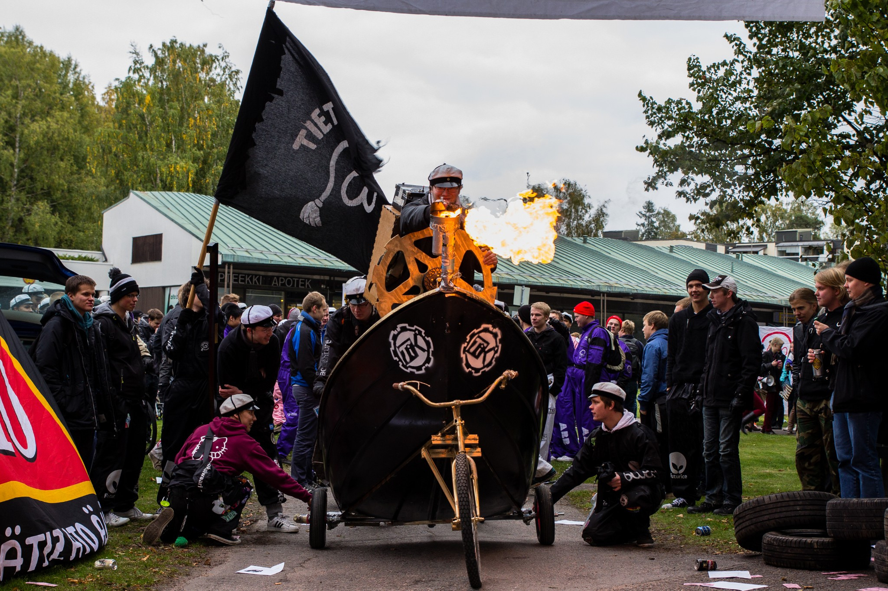

Ensimmäinen työpiste - Otatarhan ajot
09.09.2015 fuksit / työ /

Woop woop!
Nyt on eka työpiste jaossa! Fuksivuoden aikana pitää saada 2 työpistettä kasaan alakohdasta pisteet/kilta/työ. Työskentelemällä tapahtumissa näet oikeasti miten Otaniemen kulttuuri kukoistaa vapaaehtoisvoimin ja kuinka hauskaa se voi myös olla. Yleinen sanonta on, että keittiössä on aina parhaat bileet ja omasta mielestä hyvin usein se on pitänyt paikkansa. Lähes kaikki Otaniemessä (mukaanlukien minä) tekevät yhteisön eteen vapaaehtoisesti töitä, hyppää sinäkin mukaan!
Otatarhan ajot
Otatarhan ajot ovat joka vuosi Lakinlaskijaisten päivänä eli 30. syyskuuta järjestettävä kisa eri yhdistysten ja kiltojen kesken. Kuka tahansa voi osallistua kisaan rakentamalla oman ajokin, jolla ajetaan Alvarin aukiolle muodostuvaa rataa ympäri. Otatarhan ajoissa on kaksi kisaa sekä kaksi palkintoa per kisa: fuksien kisa ja yleinen kisa, joista molemmista jaetaan tyylipalkinto sekä nopeuspalkinto. Tietokilta voitti yleisen kisan tyylipalkinnon (eli sen parhaimman palkinnon) viimeksi vuonna 2013, nyt on aika voittaa uusiksi!
Lisätietoa Otatarhan ajoista ja säännöistä saa osoitteesta http://otatarhanajot.ayy.fi/.
Kuinka pääsen mukaan?
Osallistumalla ajokin suunnittelemiseen tai rakentamiseen ja kisaan saat ensimmäisen työpisteesi kohdasta pisteet/kilta/työ - Muu työ. Juuso Toikka & kumppanit ovat jo aloittaneet organisoimaan ryhmää ajokin rakentamiselle perustamalla Otatarhan ajokille oman Telegram-ryhmän sekä varaamalla ajan ensimmäiselle suunnittelukokoukselle. Tule T-talolle huomenna torstaina klo 16:15 ensimmäiseen suunnittelukokoukseen! Paikka ilmoitetaan myöhemmin Telegramissa.
Telegram-ryhmään pääset klikkaamalla tätä linkkiä: https://telegram.me/joinchat/05a2f7dd00e952b0806ba6abb52e4ea2
Kaikki innolla mukaan, tehdään huikea ajokki ja ennen kaikkea pidetään hauskaa yhdessä. :)
P.S. Tapahtuma löytyy myös FB:stä seuraavasta linkistä: https://www.facebook.com/events/987714921271864/
<3 ultsi